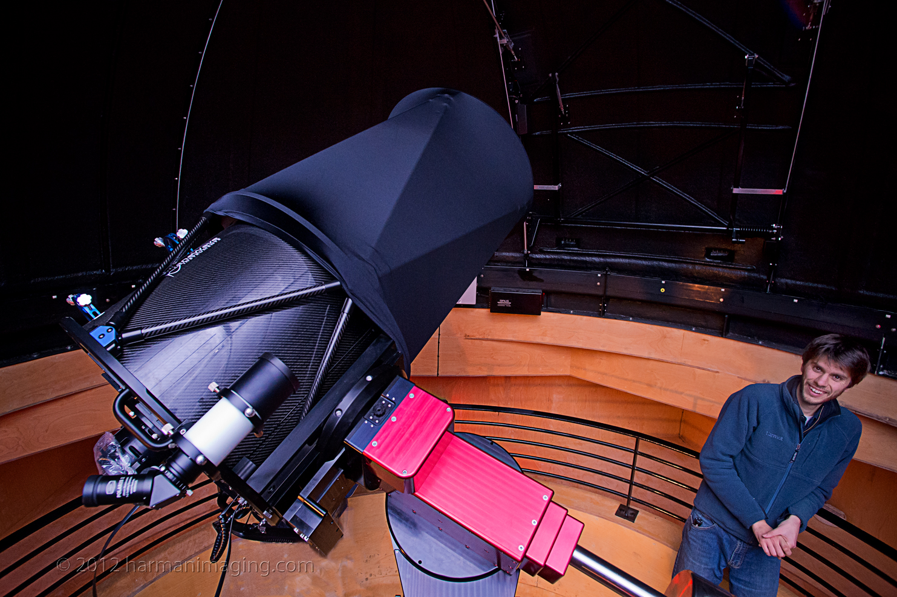

Postdoctoral Researcher at Uppsala University
|
Welcome! I am a postdoctoral researcher in astrophysics at Uppsala University in Sweden. The focus of my research is aimed at understanding the magnetic fields and the chemical abundance structures of chemically peculiar A-type stars. In particular, using high-resolution spectropolarmetric observations combined with magnetic Doppler imaging techniques to diagnose the magnetic and atmospheric chemical abundance properties of such stars using surface maps.

|